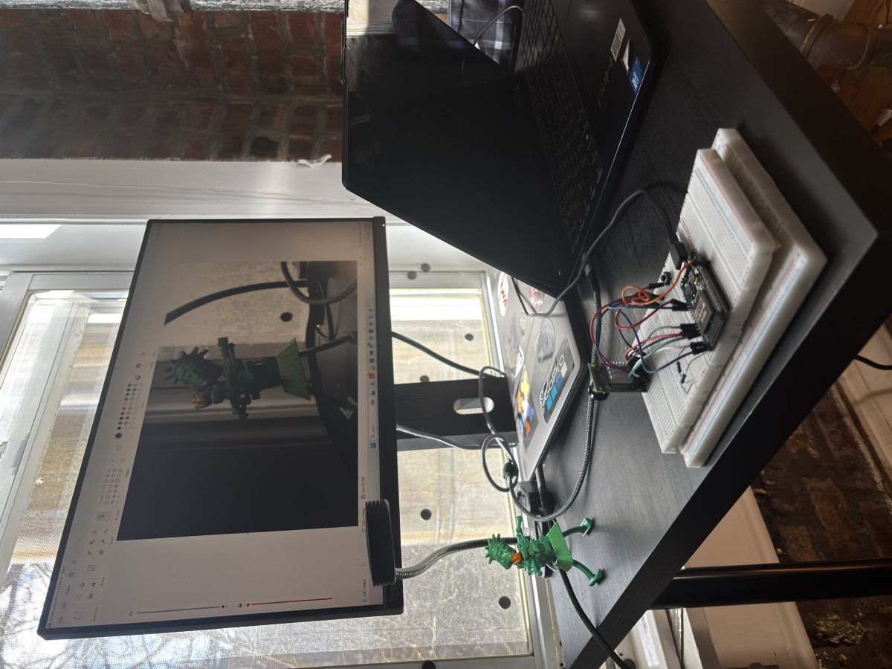

JT's Corner of the Internet
Jonathan (JT) · Electrical & Computer Engineering · NYU
Hey, I'm Jonathan (also sometimes known as JT). I'm a junior at NYU majoring in Electrical and Computer Engineering. I love playing piano and music as a whole (I can talk to you about any genre you want), tennis, and videogames.
Right now, I'm a technical assistant at NYU's MakerSpace and the High Voltage lead at NYU Motorsports. I'm currently working on our accumulator to make a fast, efficient, and safe car. I'm also working on various music technology projects such as custom plugins for local producers and building my own audio hardware. See more projects below!
Contact me at jmt10102@nyu.edu or jothomas10102@gmail.com. Here's my resume and GitHub.
Selected Work
Projects

Electro TA
A live AI teaching agent that debugs hardware in real time, built for Gemini's Live Agent Challenge with an ESP32 and Arducam.
View project →
NYU Motorsports
High Voltage lead on our Formula SAE team — accumulator design, manufacturing, and custom BMS firmware.
View project →
SoundForge
"One pedal to rule them all" — an FPGA carrier board that runs any guitar or keyboard effect you design, digitally.
View project →
PCB Evolution
My journey learning board design in Altium, from a rough LED chaser to a BJT amplifier to an FPGA audio board.
View project →
BitCrusher Plugin
An audio VST I built after researching the effect — chasing the 8-bit charm of old videogame music.
View project →
Tape Recorder Plugin In progress
A custom tape-recorder effect I'm building for a close friend and producer, for Ableton.
View project →
Automatic Player Piano In progress
A roadside piano I'm refurbishing and automating into a self-playing "ghost" piano with MIDI-driven keys.
View project →
Automatic Umbrella Deployer
My first-semester engineering project at NYU: an umbrella that deploys itself when it detects water.
View project →